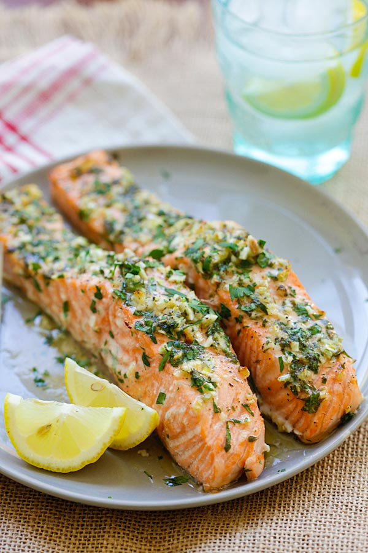

Italian-Herb Salmon Recipe

Delicious Recipe You Never Knew You Needed
I am a bit obsessed with Salmon. This is just a recipe I conjured up because I was so
tired of eating out to get my Salmon fix. I hope you enjoy!
Ingredients
- 4 filets (fresh or frozen) Salmon
- Avocado Oil
- Kosher Salt
- Black Pepper
- Onion Powder
- Garlic Powder
- Red Chilli Flakes
- Italian-Herb Seasoning
- 2 Tbs of Salted Butter
Steps
- Add about 1 Tbs of Avocado oil (or whatever cooking oil you prefer) to your pan on medium-low heat
- Season your Salmon on each side with Kosher Salt. I didn't add any measurements to any of the seasonings because I usually just add enough to cover just enough of the entire side. Not too much but not too little
- After adding Kosher Salt to both sides of each Filet, you will then do the same for the Onion Powder, Garlic Powder, Red Chilli Flakes, and Italian-Herb Seasoning
- Your oil should be hot by now so we can just go ahead and add the Filets to the pan
- You will want to cook your salmon for about 6-7 minutes on each side
- Once it's cooked thoroughly you can let it cool for about 5 minutes and serve